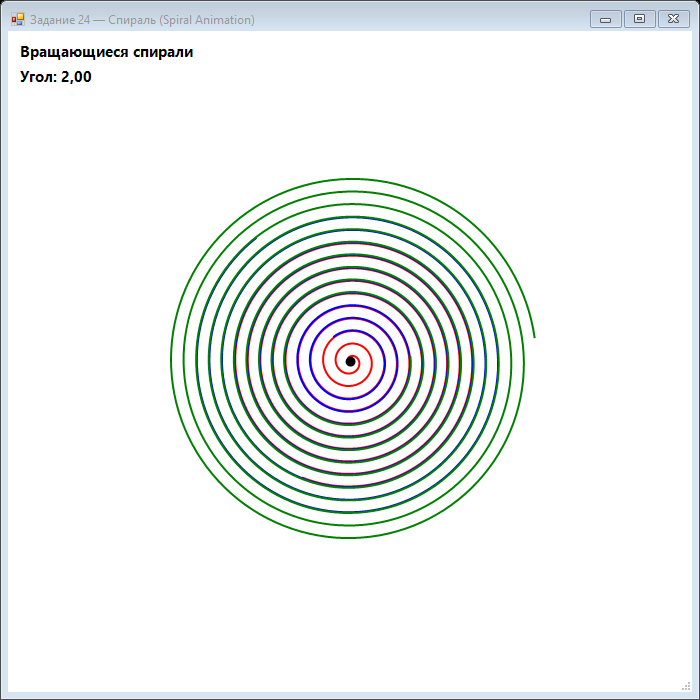

Урок 8.4: Спиральная анимация
Параметрические кривые
Спираль строится по формуле радиуса и угла в полярных координатах. В экранных координатах x и y зависят от cos и sin.
for (float t = 0; t < 20 * Math.PI; t += 0.05f)
{
float radius = t * 2;
float x = centerX + radius * (float)Math.Cos(t + rotation);
float y = centerY + radius * (float)Math.Sin(t + rotation);
points.Add(new PointF(x, y));
}📝 Пример задания — вращающаяся спираль
Три спирали с угловым смещением 120° строятся в полярных координатах и вращаются непрерывно:
using System;
using System.Collections.Generic;
using System.Drawing;
using System.Drawing.Drawing2D;
using System.Windows.Forms;
namespace CSharpGraphicsApp
{
public class Task24_SpiralAnimation : Form
{
private float rotationAngle = 0;
private readonly Timer timer = new Timer();
private float spiralDensity = 0.05f;
public Task24_SpiralAnimation()
{
Text = "Задание 24 — Спираль (Spiral Animation)";
Size = new Size(700, 700);
BackColor = Color.White;
DoubleBuffered = true;
Paint += Form_Paint;
timer.Interval = 16;
timer.Tick += (s, e) => { rotationAngle += 0.02f; Invalidate(); };
timer.Start();
FormClosed += (s, e) => timer.Stop();
}
private void Form_Paint(object sender, PaintEventArgs e)
{
e.Graphics.SmoothingMode = SmoothingMode.AntiAlias;
e.Graphics.Clear(Color.White);
int cx = ClientSize.Width / 2;
int cy = ClientSize.Height / 2;
Color[] colors = { Color.Red, Color.Blue, Color.Green };
for (int spiral = 0; spiral < 3; spiral++)
{
var points = new List<PointF>();
for (float t = 0; t < 20 * Math.PI; t += spiralDensity)
{
float radius = t * 2 + spiral * 30;
float angle = t + rotationAngle
+ (float)(spiral * 2 * Math.PI / 3);
float x = cx + radius * (float)Math.Cos(angle);
float y = cy + radius * (float)Math.Sin(angle);
if (x > 0 && x < ClientSize.Width &&
y > 0 && y < ClientSize.Height)
points.Add(new PointF(x, y));
}
if (points.Count > 1)
using (var pen = new Pen(colors[spiral], 2))
e.Graphics.DrawLines(pen, points.ToArray());
}
e.Graphics.FillEllipse(Brushes.Black, cx - 5, cy - 5, 10, 10);
e.Graphics.DrawString($"Угол: {rotationAngle:F2}",
new Font("Segoe UI", 11, FontStyle.Bold), Brushes.Black, 10, 10);
}
}
}Практическое задание
- Реализуйте спираль по параметру t.
- Добавьте анимацию вращения.
- Сделайте несколько разноцветных спиралей.
- Управляйте плотностью и скоростью.
Задание по аналогии: Вращающаяся спираль
По аналогии с Task24_SpiralAnimation реализуйте несколько анимированных спиралей в полярных координатах.
- Объявите поля
float rotationAngle = 0иfloat spiralDensity = 0.05f. ВTimer_TickувеличивайтеrotationAngle += 0.02f. - В
Form_Paintдля каждой из 3 спиралей создавайте список точек. Параметрtидёт от 0 до20 * Math.PIс шагомspiralDensity. - Вычисляйте радиус:
radius = t * 2 + spiral * 30. Угол:angle = t + rotationAngle + spiral * 2π / 3(смещение на 120° между спиралями). - Переводите в экранные координаты:
x = cx + radius * cos(angle),y = cy + radius * sin(angle). Добавляйте точку только если она в пределах формы. - Дополнительно: измените формулу радиуса на
radius = t * 3и посмотрите, как меняется вид спирали. Попробуйте логарифмическую спираль:radius = exp(t * 0.1) * 5.
Пример результата выполнения задания:

Скриншот программы (Task24)
💡 Совет: Проверяйте, что точка в пределах формы (
x > 0 && x < Width && y > 0 && y < Height), иначе DrawLines может рисовать линии через весь экран при выходе спирали за границы.
Самопроверка
Какие параметры определяют плотность спирали? Как изменение угла влияет на визуальный эффект?